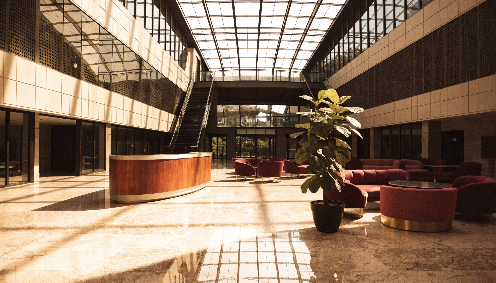
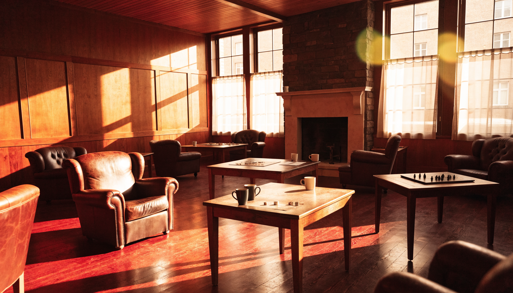

A Tour of FU
There's no real campus — but if there were, this is what walking across it would look like. For the faculty directory, browse by specialty instead →
Arrival
Ivy, stone, and a walk that gets slower the closer you get. Illustrative — real thing this stands in for: run_cycle.py, the actual pipeline behind every building on this tour.
The Quad
The open green space between all three departments — nobody's specialty, everybody's shortcut. Real thing: the real cross-department pairs, Section 2's three mechanisms colliding across schools.
The Registrar's Library
Where every real transcript lives — the ranked leaderboard, shelved by tier. Real thing: ledger.py / score_hypotheses.py.

The Engineering & Computation Complex
Home to the largest single specialty in every department — the busiest lab on campus by real publication count, every time. Real thing: hypothesis_engine.py's most-populated real classification bucket.
A Lecture in Session
Three departments, three real findings, delivered the way a real lecture would deliver them. The faculty are fictional. What they're saying, in each clip, is a real result pulled straight from the leaderboard — not written for the occasion.
Department of Bisociation Studies
“Overlay social network structure onto team collaboration, and one pattern holds: network density that predicts a healthy social system also predicts a team that ships.”
Real finding cited: Social Systems × Human Team Collaboration (real hypothesis, +55 pts, ADJACENT_ACTIVE). Delivery is fictional — the finding is not.
Department of Janusian Studies
“Instruction scheduling improves performance by cutting execution time — and it degrades performance, by adding overhead. Both are true. That contradiction is the real research question.”
Real finding cited: Computer science — compiler instruction scheduling (real hypothesis, +60 pts, ADJACENT_ACTIVE). Delivery is fictional — the finding is not.
Department of Homospatial Studies
“Superimpose immune memory onto city planning, and a city starts to look like an immune system: it remembers past shocks, and defends against what it has already survived.”
Real finding cited: Adaptive Immune Memory × Human Urban Planning (real hypothesis, +55 pts, ADJACENT_ACTIVE). Delivery is fictional — the finding is not.
Administration Building
Office of the Dean, upstairs. Real thing: the Dean's own real correspondence and findings, delivered from here.

Student Union
Where PhD and Masters candidates — each one a real hypothesis in progress — compare notes between departments. Real thing: hypotheses/*.md, every real in-progress record.
Department Seals
The same three engravings that already explain each department's method in the real Dean's Letters, reused here rather than redrawn.


The Founding Collision
FU's own founding story, told the way the Charter opens it: Darwin reading Malthus, one collision producing a whole theory. Real thing: the Charter's own Article I.